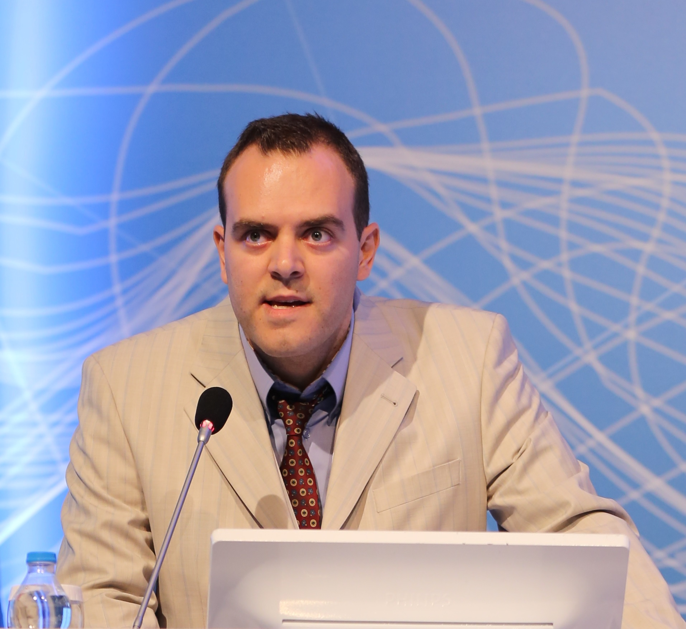

I am an assistant professor in the Department of Geomatics Engineering at Hacettepe University, Ankara, Turkey. My research interests are broadly in the analysis of data involving spatial and temporal domains. Specifically, I am interested in developing methods of spatio-temporal data mining and pattern discovery for the purpose of enhancing state-of-the-practice solutions on intelligent transportation systems.
Paper presented at SCA is online: Which Way is Yıldız Amfi? Augmented Reality vs. Paper Map on Pedestrian Wayfinding
Served on the program committee of SCA 2020